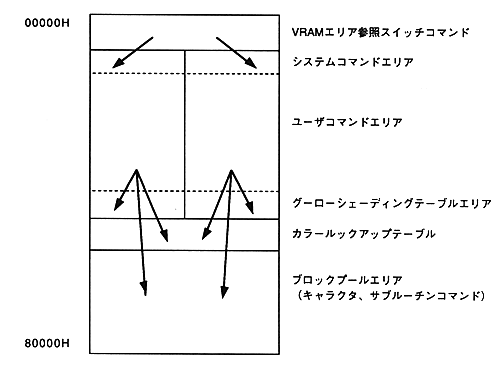

Return to previous page ｜ Return to menu ｜ Go to next page
-
2. VDP1 extension processing guide
-
2.1 Purpose
- Management of VRAM not included in basic processing library and sprite to VRAM
Supports command writing.
- Primary sprite display corresponding to sprite command can be performed
.
-
2.2 VRAM area management method
- VRAM area (512 Kbytes) is allocated and used as shown below.

-
[Description of each area]
- VRAM area reference switch command area
Sprite jump command to switch VRAM areas 0 and 1 according to the frame change.
- System command area
of frame buffer when frame change is performed with indefinite interval manual change
This is an area for this access routine to expand commands for performing rendering with polygon drawing.
The same size exists in areas 0 and 1.
- User command area
Various command settings called between SPR_2OpenCommand () and SPR_2CloseCommand () routine
This is the area where sprite commands are set sequentially from the top by the routine. Same size in areas 0 and 1
Exists.
Return to previous page ｜ Return to menu ｜ Go to next page